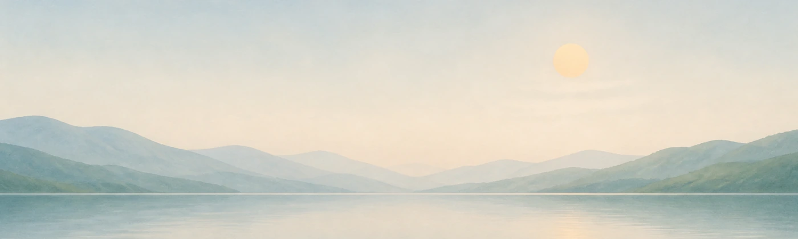

10 秒
一层泪膜保护眼睛的极限时间
先说清楚一件事：眨眼的意义，从来不是「多眨眼」本身。
每眨一次眼，泪膜就重新铺满眼球表面——锁住水分、滋养角膜。泪膜只能撑 10 秒左右，而正常人每 4 秒眨一次，刚好赶在它破裂前续上。这是一套精密的天然保湿机制。
聚精会神看屏幕时，人会 30–60 秒忘记眨眼。泪膜破了，角膜就开始「裸奔」——干涩、异物感、视疲劳随之而来，长年累月，便是干眼。顺便，一坐一下午的肩颈也在抗议。
不是「多眨眼」的唠叨，也不是装了又卸的计时器——而是一只真的看得见你的刘看山：在泪膜告急之前把你拉回来，坐得太久时喊你起身。安静地陪着你，只在该出现的时候出现。
泪膜与眨眼的机制，参考知乎专栏 《认识干眼症》（眼科医生科普）
定时弹窗式的提醒，迟早会被你关掉。Look Me 的提醒建立在一个事实上：他看得见你的状态——该出现时出现，不该打扰时，一个字都不说。
盯屏超过 25 秒没眨眼——这期间你的泪膜可能已经破了两次。他会举着小牌子「陪我慢慢眨 2 下」：眨一次眼，就是给眼睛重新镀上一层保护膜。眨满两次他才安心走开，之后 90 秒绝不唠叨；看不到你的时候，他会停下来等，绝不瞎计时、瞎提醒。
20-20-20 是目前放松睫状肌最好的动作：每看屏 20 分钟，望向 20 英尺（约 6 米）外，坚持 20 秒。盯近处时，睫状肌一直紧绷着，只有望向远处才能真正松开——这也是眼科医生最常推荐的护眼法则。节奏看山替你记着：满 20 分钟，他就为你展开一扇 20 秒的远眺小窗；不想远眺随时跳过，他记着下次再叫你。
他认得你起身离开的样子：真的站起来才记一次，你侧个身、摄像头晃一下都不会被冤枉。坐得太久他会轻轻提醒，你说「知道了」，这一程他就不再打扰。1 到 600 分钟，随你调。
检测到你真的打了个哈欠——不是说话时张了张嘴——他会跟着张嘴打一个。你困的时候，他先困给你看。
菜单栏一个「监测与提醒」总开关，眨眼、远眺、久坐各有独立开关——关掉谁都不影响另外两个；只关提醒，统计照记。锁屏、睡眠、或不在你设定的监测时段（默认 09:00–21:00），他会自动休息并释放摄像头。你的电脑，你说了算。
试试点看，真的能关

工作间隙抬头一看，他可能正在自己玩——也可能，正着急地提醒你。
每当你完整地眨一次眼，他都跟着眨一次。你看不见自己的眼睛，他替你看着——他眨了，就说明你刚才真的眨了。
你打了个哈欠，他也跟着张嘴打一个。你困的时候，他先困给你看。
25 秒不眨眼，他会从屏幕右上角顺轨道缓缓降落、掉着眼泪提醒你；你一眨眼，他立刻擦泪回升，然后安静 25 秒。
没人理他的时候，他也会自己玩：拍手、坐下、转圈——设置里可以指定最爱的一项，或让他自动轮换。
每一次眨眼、每一次起身、每一段看屏，他都悄悄记下——今天眨了多少次眼、坐了多久、起来了几趟，打开就一目了然。这本日记 30 天后自动翻篇，从不上传，也永远不会变成给别人看的数据。
事件视图：一天里每件事的精确落点，六条泳道各自排开。分钟视图：眨眼、哈欠、站起、坐下，任选一件看这一天的节奏。滚轮一转，从一整天缩放到一分钟以内。
他记住的只是「几点眨了眼、几点起了身」这样的小事——不评分、不打卡、不搞连续签到，健康习惯不需要被审判。
除了护眼陪伴，他还在通过知乎开放平台学会一些新本领——解锁中，敬请期待。
桌面上的看山已经会用开放平台的 CLI 为你办事——新能力正在路上。